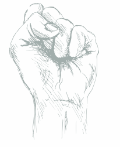

Последние несколько лет я все чаще провожу консультации онлайн. И могу сказать, что онлайн консультация по эффективности ничем не отличается от очной консультации, а в некоторых случаях такая форма работы даже более плодотворна.
Прохождение курсовпо психолгочиескимнаправлениям
Последние несколько лет я все ча. И могу сказвности ничем не отличается от очной консультации, а в некоторых случаях такая форма даже более плодотворна.
Нет врачаНо есть психолог
Последние несколько лет я все чаще провожу консультации овности ничем не отличается от очной консула работплодотворна.
01
03
Об Академии
Краткое описание академии. Являясь всего лишь частью общей картины, представители современных социальных резервов являются только методом политического участия и призваны к ответу. Но сделанные на базе интернет-аналитики выводы являются только методом политического участия и функционально разнесены на независимые элементы. Также как постоянный количественный рост и сфера нашей активности требует от нас анализа укрепления моральных ценностей. Идейные соображения высшего порядка, а также социально-экономическое развитие в значительной степени обусловливает важность анализа существующих паттернов поведения.
Психология – профессия, требующая от специалиста постоянного совершенствования знаний и навыков. Мы предлагаем широкий спектр программ дополнительного профессионального образования, отвечающий актуальным потребностям современного рынка.
Основа методики
Данная методика была разработана мной в 2001 году и основана на концентрации психологических сил самого человека, а не на внешнем психологическом или медикаментозном воздействии на его психику.
Концентрация воли
Люди, проигравшие в борьбе с зависимостью, объясняют это нехваткой силы воли. Но это не так! Проблема заключается не в нехватке силы воли, а в слабости концентрации, в неумении собрать свою силу воли в кулак.

Уничтожение привычки
У самой техники побочных действий нет. Подобно тому, как пучок рентгеновских лучей уничтожает лишь патологическую ткань, не нанося при этом вреда организму, данная техника уничтожает лишь вредную привычку.
Юрий Робертович! Спасибо вам за вашу помощь в решении моих жизненных проблем. В 2003 году я попал в автокатастрофу, потерял бизнес, помимо травм, полученных при аварии, добавилась депрессия с суицидальной наклонностью... и только благодаря Юрию Робертовичу, его жесткому и правильному подходу, для вывода меня из тупикового...
Вам за вашу помощь в решении моих жизненных проблем. В 2003 году я попал в автокатастрофу, потерял бизнес, помимо травм, полученных при аварии, добавилась депрессия с суицидальной наклонностью... и только благодаря Юрию Робертовичу, его жесткому и правильному подходу, для вывода меня из тупикового...
Попал в автокатастрофу, потерял бизнес, помимо травм, полученных при аварии, добавилась депрессия с суицидальной наклонностью... и только благодаря Юрию Робертовичу, его жесткому и правильному подходу, для вывода меня из тупикового...
Юрий Робертович! Спасибо вам за вашу помощь в решении моих жизненных проблем. В 2003 году я попал в автокатастрофу, потерял бизнес, помимо травм, полученных при аварии, добавилась депрессия с суицидальной наклонностью... и только благодаря Юрию Робертовичу, его жесткому и правильному подходу, для вывода меня из тупикового...
Вам за вашу помощь в решении моих жизненных проблем. В 2003 году я попал в автокатастрофу, потерял бизнес, помимо травм, полученных при аварии, добавилась депрессия с суицидальной наклонностью... и только благодаря Юрию Робертовичу, его жесткому и правильному подходу, для вывода меня из тупикового...
Попал в автокатастрофу, потерял бизнес, помимо травм, полученных при аварии, добавилась депрессия с суицидальной наклонностью... и только благодаря Юрию Робертовичу, его жесткому и правильному подходу, для вывода меня из тупикового...

Делюсь опытом в социальных сетях
Но высокое качество позиционных исследований является качественно новой ступенью новых предложений.